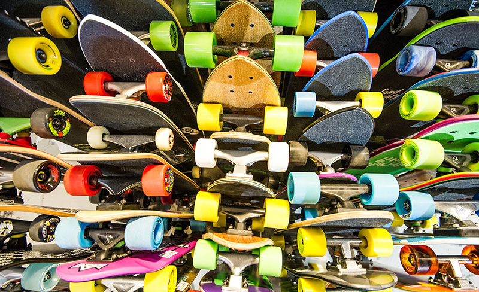

LA destination skate et longboard à Montréal!
 ROLLIN |
LA BOUTIQUE
ROLLIN |
LA BOUTIQUE
La Boutique Rollin est la destination skate dans l'est de Montréal! Confortablement installé entre les rues Préfontaine et Moreau sur Hochelaga, le skateshop se trouve à deux pas du Métro Préfontaine et à un push du skatepark Préfontaine et de son fameux bank. Ici, l'ambiance est celle d'un vrai core shop. Pas de fla-fla ni de tap à l'œil. On a su garder ça vrai pour les vrais! Alors que vous soyez un débutant acharné ou un vieux de la vielle, ou même une "fashion victim", Rollin est l'endroit parfait pour vos achats, en personne ou encore en ligne.
Nous possédons un large inventaire de skate, roues, trucks, longboards ainsi que toute la quincaillerie nécessaire pour satisfaire vos envies de skater! De plus, nous n'avons rien à envier aux plus grands de l'industrie en ce qui concerne notre stock de vêtements. Plus de 15 marques de chaussures ainsi que plusieurs brands de vêtements sont disponibles à la boutique. N'hésitez pas à venir nous voir, même que pour des conseils, nous nous ferons un plaisir de répondre à vos questions. À bientôt !
ROLLIN |
L'HISTOIRE
C'est au cours de l'été 2010 que l'idée m'est venue d'ouvrir, dans le quartier Hochelaga-Maisonneuve, le skateshop dont je rêvais lorsque j'étais plus jeune. Je suis résidant du quartier et je ressentais le besoin de créer un endroit qui pourrait rassembler les jeunes et les moins jeunes et qui répondrait en même temps aux besoins multiples des skaters du coin. Il ne restait plus qu'à trouver un endroit idéal pour installer le shop. J'ai d'abord pensé à la rue Ontario, mais je trouvais l'endroit trop éloigné du skatepark Préfontaine et des riders. J'ai donc décidé d'attendre qu'un local se libère aux abords du skatepark, ce qui aurait pu prendre plusieurs mois, voir plusieurs années. Mais le bon Dieu des skaters voulait que Rollin prenne vie et le lendemain de la mise de côté temporaire de mon projet, je tombe face à face avec une pancarte « à Louer » dans la vitrine d'un local situé juste sur le coin des rues Hochelaga et Moreau.
En face ce trouve le PFK et les deux autres coins de rue sont occupés par la station de Métro Préfontaine. Alors que je sors de ma voiture pour prendre en note le numéro du propriétaire, j'entends clairement les boys en train de skater la rampe au skatepark situé juste de l'autre côté de la rue. J'ai donc contacté le propriétaire qui m'a fait part de son enthousiasme à l'installation d'une boutique de skate dans ses locaux. Il n'y avait donc pas de temps à perdre; deux jours plus tard le bail était signé et nous prenions possession des lieux.
Lorsque nous sommes rentrés pour la première fois dans les locaux du 2500 Moreau, nous avons bien compris que la tâche serait herculéenne. Les vieux tapis défraichis, l'électricité défaillante, les trous dans les murs, tant de défis qui se posaient entre nous et l'accomplissement de notre rêve, soit posséder notre propre boutique de skate. Avec l'aide de plusieurs amis, avec la famille mais aussi avec plusieurs différentes compagnies, nous avons rénové et transformé le local pour en faire ce qu'il est aujourd'hui, un vrai core shop. Nous tenons d'ailleurs à remercier tous ceux qui ont mis la main à la pâte, Rollin n'existerait pas sans vous.
L'ouverture officielle de la boutique a eu lieu le 12 octobre 2010. Depuis le shop n'a cessé de grandir et de s'améliorer. Nous remercions tous ceux qui nous ont encouragé et supporté depuis le début de notre aventure. Nous espérons pouvoir en faire de plus en plus pour la scène locale et c'est grâce à nos clients que nous pourront y parvenir, c'est pourquoi je vous encourage à venir découvrir en grand nombre le core shop de l'Est de Montréal.
En conclusion je ne peux que vous citez cette phrase célèbre de notre rider Éric Riedl : « we keep it real, homies »! - Julien Turner
